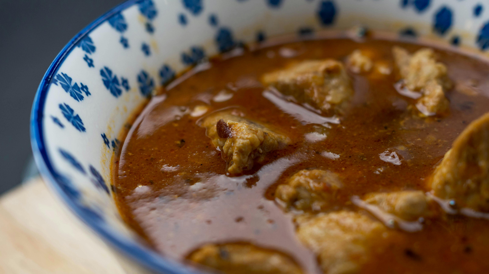

Etouffee, Home

Gumbo is a rich, savory Louisiana stew that blends West African, Native American, and European culinary traditions. It features a dark, flour-and-fat roux, the "holy trinity" of vegetables (celery, bell peppers, and onion), and a variety of meats or seafood. It is traditionally served over steamed white rice
Ingredients
- 1/2 cup vegetable oil
- 1/2 cup all-purpose flour
- 1 large onion, chopped
- 1 bell pepper, chopped
- 2 celery stalks, chopped
- 3 cloves garlic, minced
- 1 pound andouille sausage, sliced
- 1 pound chicken thighs, cut into pieces
- 4 cups chicken broth
- 1 can (14.5 oz) diced tomatoes
- 2 bay leaves
- 1 teaspoon thyme
- 1 teaspoon paprika
- Salt and pepper to taste
Steps
- Heat the vegetable oil in a large pot over medium heat.
- Whisk in the flour and cook for 1-2 minutes, stirring constantly.
- Add the onion, bell pepper, and celery. Cook for 5-7 minutes until softened.
- Add the garlic and cook for 1 minute.
- Add the sausage and chicken pieces. Cook until browned.
- Pour in the chicken broth and diced tomatoes. Add the bay leaves, thyme, and paprika.
- Bring to a boil, then reduce heat and simmer for 30 minutes.
- Season with salt and pepper to taste.